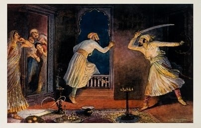

Shaista Khan and Surat
Shivaji’s night raid on the Mughal viceroy at Pune and his six-day plunder of Surat, the empire’s richest port, announce him to the Mughals and the Company.

On the night of 5 April 1663 Shivaji led a small party into Pune, which the Mughal viceroy of the Deccan, Shaista Khan, had occupied for three years and where he was lodged in the Bhonsle family house, the Lal Mahal. The raiders got into the viceroy’s quarters; Shaista Khan escaped through a window, losing three fingers, and his son and several attendants were killed. Aurangzeb, his uncle, transferred him to Bengal in disgrace.
In January 1664 Shivaji marched north with several thousand horse and on 5 January entered Surat, the principal port of the Mughal empire and the embarkation point for the Mecca pilgrimage. The governor, Inayat Khan, withdrew into the castle and left the city to its fate. For six days the Marathas looted the merchants’ houses, concentrating on the greatest fortunes, including that of the Jain banker Virji Vora; estimates of the plunder run to a crore of rupees. The English factory under Sir George Oxenden and the Dutch factory barricaded themselves and fought the raiders off, which earned Oxenden a gift from the Company and a reputation at the Mughal court.
The two episodes transformed Shivaji’s position. The Pune raid humiliated the empire’s highest officer in the south; the Surat plunder financed the forts and the fleet, including Sindhudurg, begun that November. Aurangzeb responded by sending Mirza Raja Jai Singh with a large army in 1665, and by remitting customs at Surat to keep its merchants from leaving. Shivaji returned to Surat in 1670 and plundered it again.
For the European companies, Surat was the lesson that Mughal protection could fail and that a fortified factory was worth having. The Company’s shift of its western headquarters to Bombay, which the Crown was about to receive from Portugal and lease to it, owed something to what Oxenden saw in January 1664.
In the story
Surat brought three of the collection’s polities into one street: a Maratha raiding force, a Mughal governor who hid in his castle, and an English factory that defended itself. The episode showed that the empire’s writ in the Deccan could be broken by a fast-moving regional power, and it taught the Company the value of walls and ships. Both lessons shaped the next century, in which Maratha raids and Company fortifications between them hollowed out Mughal sovereignty on the western coast.
In the map collection
Du Val, Empire du Mogol (1682)
In the chronology
- 1663–1664Shivaji raids Shaista Khan’s Pune quarters, sacks Surat, and begins construction of Sindhudurg.
Sources
- Gajanan Bhaskar Mehendale, Shivaji: His Life and Times (Param Mitra Publications, Thane, 2011)
- Jadunath Sarkar, Shivaji and His Times (M. C. Sarkar and Sons, Calcutta, 1919)
- Stewart Gordon, The Marathas 1600–1818 (The New Cambridge History of India, II.4) (Cambridge University Press, 1993)